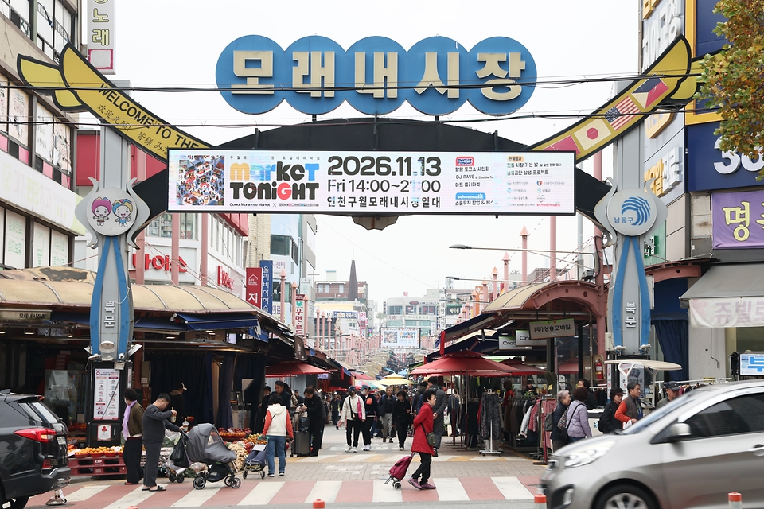
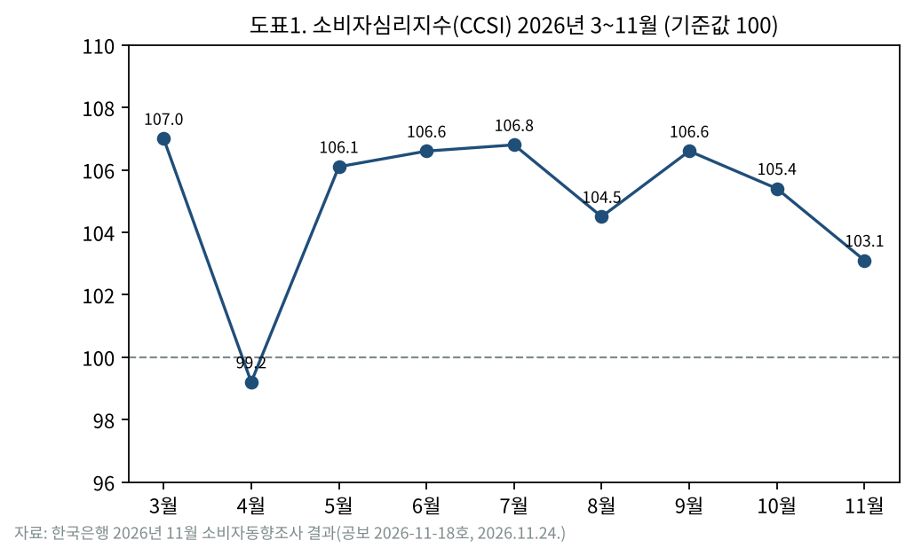
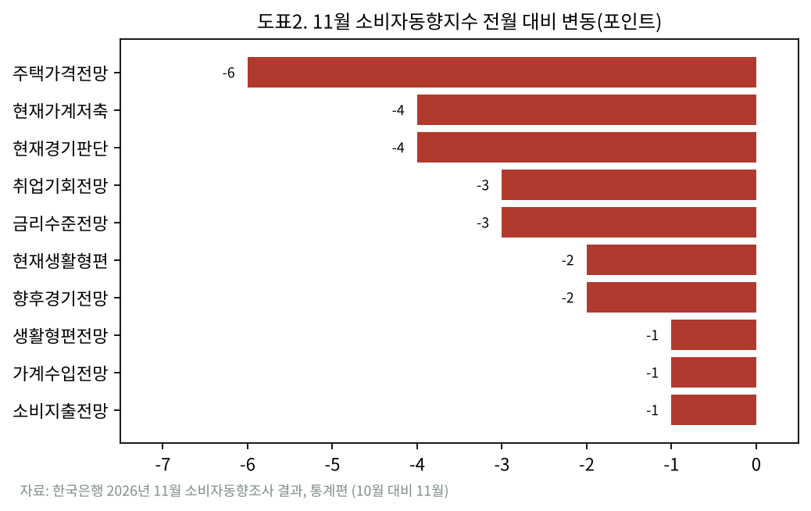
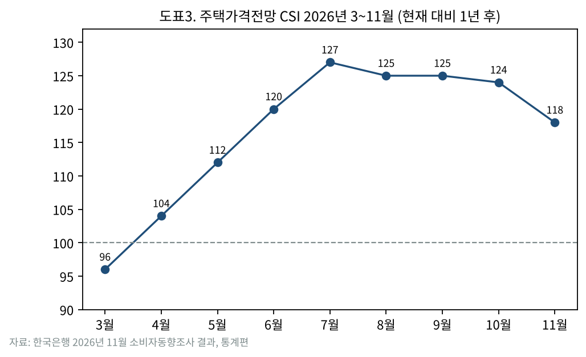
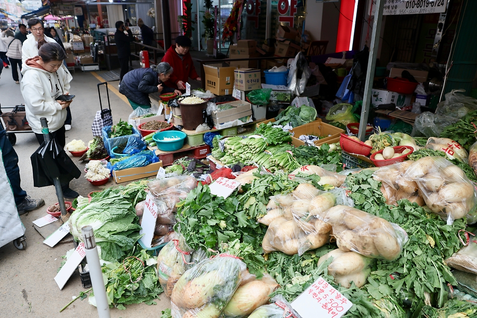
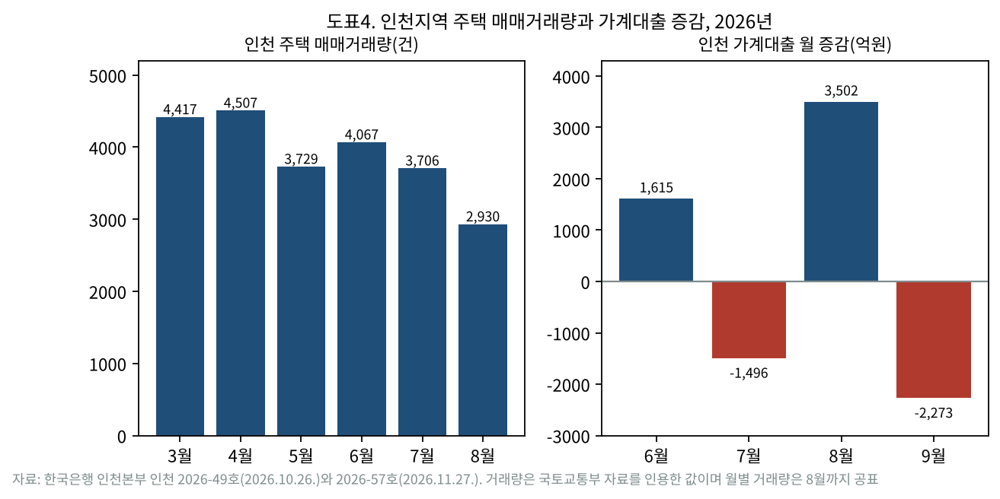

[소비심리 브리핑] 금리 인상 열흘 전 소비자심리지수 103.1, 두 달 연속 하락
현재경기판단 78, 한 달 새 4포인트 하락
11월 9~16일 조사, 11월 26일 금리 인상은 반영 안 돼
인천 소비자심리지수 102.8, 전국보다 0.3포인트 낮아
요약
AI경제저널=김갑봉 기자 | 한국은행이 11월 24일 공표한 2026년 11월 소비자동향조사에서 소비자심리지수(CCSI)는 103.1로 전월보다 2.3포인트 내렸다. 9월 106.6에서 10월 105.4, 11월 103.1로 두 달 연속 하락했고, 지수는 장기평균인 100을 웃돈다. 조사는 11월 9일부터 16일까지 했다. 한국은행이 기준금리를 3.00%에서 3.25%로 올린 11월 26일보다 조사 종료일이 열흘 앞서 인상은 반영되지 않았다.
지수를 이루는 여섯 항목이 모두 내렸다. 하락폭은 현재경기판단(78)이 4포인트로 가장 컸고, 지수를 끌어내린 기여도는 현재생활형편이 가장 컸다. 현재가계저축(89)은 4포인트 내려 3~11월 가운데 가장 낮다. 주택가격전망(118)은 6포인트 내렸으나 100보다 높다.
보도자료에는 시도별 값이 없으나 한국은행 경제통계시스템에는 지역별 값이 있다. 인천의 11월 소비자심리지수는 102.8로 전국보다 0.3포인트 낮고, 10월 105에서 2.2포인트 내렸다. 지역 값은 변동 폭이 클 수 있어 이 하락의 의미를 단정하지 않는다.
한국은행 인천본부가 11월 27일 공표한 자료에서 인천지역 금융기관 가계대출은 8월 3,502억원 증가에서 9월 2,273억원 감소로 돌아섰다. 3분기 합계는 267억원 감소로 거의 제자리다. 이 자료와 인천 소비자심리지수의 관계는 확인되지 않았다.
배경과 목적
한국은행은 11월 26일 기준금리를 연 3.00%에서 3.25%로 0.25%포인트 올렸다. 올해 7월 16일(2.75%)과 8월 27일(3.00%)에 이은 세 번째 인상이다. 2025년 5월 29일 이후 2.50%이던 금리가 누계 0.75%포인트 올랐다(AI경제저널 계산).
금리 결정 이틀 전인 11월 24일에 소비자동향조사가 나왔다. 이 글은 두 자료를 견줘 조사 종료일이 인상보다 열흘 앞선 가계의 경제 인식을 읽는다. 인천 지역 값과 인천본부 금융 자료도 이어 본다.

자료와 방법
자료는 한국은행 공식 문서와 통계 일곱 건이다. 기본 자료는 2026년 11월 소비자동향조사 결과(공보 2026-11-18호, 2026.11.24.)다. 11월 26일 통화정책방향 결정문과 기자간담회 모두발언, 기준금리 변경표를 더했다. 인천 쪽은 세 가지를 봤다. 인천본부의 2026년 8월중 여수신 동향(인천 2026-49호, 2026.10.26.)이 하나다. 3분기중 여수신 동향(인천 2026-57호, 2026.11.27., 9월중 동향 포함)과 경제통계시스템의 소비자동향조사(지역, 월) 인천 값이 나머지다.
소비자동향조사의 대상은 전국 도시 2,500가구이고 응답은 2,236가구(응답률 89.4%, AI경제저널 계산)다. 조사 기간은 2026년 11월 9일부터 16일이다. CCSI는 2003~2025년 장기평균을 100으로 삼아 산출한다. 100보다 크면 장기평균보다 낙관적이고, 작으면 비관적이라는 뜻이다.
소비자동향지수(CSI)는 항목별 지수다. 응답에 가중치를 줘 계산한 값이며, 100보다 크면 긍정 또는 증가·상승 응답이 부정 또는 감소·하락 응답보다 우세하다는 뜻이다. 100이면 두 응답이 균형이다. 종합지수 CCSI의 100이 장기평균인 것과 뜻이 다르다.
전월차와 항목별 증감은 한국은행 표의 값이고, 그 밖의 차이·비율·순위·누계·일수는 AI경제저널이 계산했다.
결과
소비자심리지수
CCSI는 11월 103.1로 10월(105.4)보다 2.3포인트 낮다. 보도자료 표에 실린 3~11월 아홉 달 가운데 4월(99.2) 다음으로 낮다(AI경제저널 계산). 6월 106.6, 7월 106.8, 8월 104.5, 9월 106.6이었다.

지수를 이루는 여섯 항목은 모두 내렸다. 현재생활형편 91(-2), 생활형편전망 96(-1), 가계수입전망 100(-1)이다. 소비지출전망 108(-1), 현재경기판단 78(-4), 향후경기전망 86(-2)이다.
보도자료의 항목별 기여도는 현재생활형편 -0.6, 생활형편전망 -0.3, 가계수입전망 -0.4이다. 소비지출전망 -0.4, 현재경기판단 -0.4, 향후경기전망 -0.3이다. 더하면 -2.4포인트로, 지수 변동 -2.3포인트와 반올림 차이가 난다(AI경제저널 계산).
가계 재정과 경제 인식
가계수입전망 100은 수입이 늘 것이라는 응답과 줄 것이라는 응답이 균형이라는 값이다. 소비지출전망 108은 지출이 늘 것이라는 응답이 더 우세하다. 임금수준전망은 121(-1)로 100을 웃돈다.
소비지출 항목에서는 여행비 94(-2), 외식비 95(-1), 의류비 97(-1), 교양·오락·문화비 92(-1)가 내려 모두 100 아래다. 줄이겠다는 응답이 우세하다는 뜻이다. 교육비 101(+1)과 교통·통신비 107(+1)은 올랐다.
취업기회전망은 83(-3), 금리수준전망은 124(-3)다. 금리수준전망이 100을 웃도는 것은 금리가 오를 것이라는 응답이 내릴 것이라는 응답보다 많다는 뜻이다. 현재가계저축은 89(-4)로, 6개월 전보다 저축이 줄었다는 응답이 우세하며 보도자료 표 3~11월 아홉 달 가운데 가장 낮다(AI경제저널 계산). 현재가계부채는 100(+1), 가계부채전망은 97(변동 없음)이다.

주택가격과 물가
주택가격전망 CSI는 118로 전월(124)보다 6포인트 내렸다. 7월 127보다는 9포인트 낮고, 5월(112) 이후 가장 낮다(AI경제저널 계산). 100은 웃돈다.

향후 1년 기대인플레이션율(일반인이 예상하는 물가상승률)은 2.6%로 0.1%포인트 내렸다. 3년 후와 5년 후는 각각 2.6%로 변동이 없다. 물가인식은 2.9%, 물가수준전망은 149로 모두 전월과 같다. 향후 1년 물가에 영향을 줄 품목은 석유류제품 49.7%, 공공요금 34.8%, 농축수산물 33.3% 순이고, 공공요금은 전월보다 4.4%포인트 올랐다. 복수응답이라 합이 100%를 넘는다.
금리 결정과 조사 시점
한국은행은 11월 26일 기자간담회 모두발언에서 인상 이유 세 가지를 밝혔다. 성장세가 한층 강해졌고, 물가상승률이 상당 기간 목표수준을 웃돌 것으로 보이며, 금융안정 측면의 리스크가 이어진다는 것이다. 금융안정 리스크로는 가계대출 증가세 확대와 수도권 주택가격에 대한 상승 기대가 여전히 높은 점을 짚었다. 황건일·이수형 위원 두 명은 기준금리를 3.00%로 유지하는 것이 바람직하다는 의견을 냈다.
한국은행은 10월 이후 소비가 다소 주춤하지만 수출과 투자 중심의 성장 흐름이 이어진다고 설명했다. 성장률은 2026년 3.9%, 2027년 4.1%, 2028년 3.0%로, 소비자물가는 2026년 2.7%, 2027년 2.4%로 전망했다. 수출과 투자 증가의 영향이 점차 가계소득 증대와 소비 회복으로 이어질 것으로 본다고 밝혔다. 추가 인상의 시기는 성장과 물가 경로를 점검하며 정하겠다고 했다.
11월 소비자동향조사는 11월 9~16일에 응답을 받았으므로 11월 26일 인상을 반영하지 않는다. 응답 기간 끝(11월 16일)이 인상 결정보다 열흘 앞선다(AI경제저널 계산). 인상 이유는 결정문과 모두발언 모두에서 확인했다. 12월분은 12월 24일 공표 예정이며 조사 기간은 공표되지 않았다.
인천 가계의 자료
11월 소비자동향조사 보도자료에는 시도별 지수가 없다. 한국은행 경제통계시스템 소비자동향조사(지역, 월)에서 인천 소비자심리지수를 확인했다. 2026년 3월 107.9, 4월 97.6, 5월 105, 6월 108이다. 7월 106, 8월 106, 9월 107.1, 10월 105, 11월 102.8로 이어졌다. 11월 값은 전국 103.1보다 0.3포인트 낮고, 10월에서 11월로 2.2포인트, 9월에서 10월로 2.1포인트 내리며 두 달 연속 하락했다(AI경제저널 계산). 값은 한국은행 공표 그대로여서 정수로 낸 달이 섞여 있다.
지역 값은 표본이 전국보다 작을 가능성이 있어 변동 폭이 클 수 있다. 3월에서 4월로 10.3포인트 내렸다가 5월에 7.4포인트 오른 적도 있어, 2포인트대 하락을 큰 변화로 읽기는 어렵다. 표본 규모는 확인하지 못했다.

인천본부 자료는 11월 27일 공표한 3분기중 동향(인천 2026-57호)이 가장 최근이고, 9월중 동향이 들어 있다. 인천 가계대출은 7월 1,496억원 감소, 8월 3,502억원 증가, 9월 2,273억원 감소로 움직였고 9월말 잔액은 75조7,290억원이다. 3분기 합계는 267억원 감소로 거의 제자리다(7·8·9월 합계는 AI경제저널 계산이며 인천본부 표의 3분기 값과 같다). 8월은 주택담보대출이 3,771억원 늘고 기타대출이 269억원 줄었다. 인천본부는 8월 증가를 주택거래량이 줄었는데도 서구 등 신규 입주 단지에서 집단대출이 실행된 결과로 설명했다.
9월은 주택담보대출이 1,274억원, 기타대출이 998억원 줄었다. 두 항목의 합은 반올림으로 총액과 1억원 차이가 난다. 3분기로 보면 주택담보대출은 1,001억원 늘어 2분기(6,974억원)보다 증가폭이 줄었고, 기타대출은 1,267억원 줄었다. 3분기 가계대출이 거의 제자리인 것은 이 둘이 서로 상쇄된 결과다. 인천본부는 주택담보대출 증가폭 축소를 주택거래량 감소 등으로 설명했다. 기타대출 감소는 개인 주식투자 둔화, 신용대출 관리 강화 등으로 설명했다. 두 설명은 3분기 전체에 대한 것이고 9월 한 달의 원인은 따로 밝히지 않았다.
인천 주택 매매거래량은 7월 3,706건에서 8월 2,930건으로 20.9% 줄었다. 인천본부 표의 3~8월 여섯 달 가운데 8월이 가장 적다. 3분기 합계는 9,770건으로 2분기 12,303건보다 20.6% 적다(AI경제저널 계산). 9월 한 달 거래량은 따로 공표되지 않았다. 3분기 합계에서 7월과 8월을 빼면 약 3,134건으로 8월보다 많지만, 분기 값이 개정됐을 수 있어 잠정 계산이다.

해석 (AI경제저널 판단)
가. 11월 지수는 금리 인상 전 심리다. 응답 기간 끝이 인상 결정보다 열흘 앞서므로, 인상 뒤 심리는 12월분 조사 이후에야 읽을 수 있다. 12월분 조사 기간이 인상 뒤인지는 12월 24일 공표 이후에 확인한다.
금리수준전망 124는 6월 이후 125~128을 오가던 값에서 내려왔다. 3~11월 아홉 달 내내 100을 웃돌았으므로, 금리가 오를 것이라는 응답은 인상 결정 전부터 계속 우세했다. 인상이 이미 예상돼 심리에 일부 반영됐을 수 있어, 12월 지수의 변화를 인상의 효과로 읽을 때는 이 점을 감안해야 한다.
나. 한국은행은 성장의 효과가 가계소득과 소비로 이어질 것으로 보지만, 11월 설문에는 혼재된 신호가 나타난다. 현재생활형편은 91로 100에 못 미치고, 가계수입전망은 100으로 균형이다. 반면 소비지출전망 108과 임금수준전망 121은 100을 웃돈다. 한국은행은 소득 파급을 점차 나타날 일로 설명했고 설문은 현재 시점이어서 두 값을 같은 선에서 비교하기는 어렵다.
소득 회복이 가계의 체감으로 이어지는지는 이 한 달 자료로는 확인할 수 없다.
다. 소비자심리지수 103.1은 장기평균보다 높고, 주택가격전망 118은 상승 응답이 하락 응답보다 많다는 뜻이다. 두 값 모두 내렸으나 기준선 위에 있다. 한국은행은 모두발언에서 수도권 주택가격 상승 기대가 여전히 높다고 밝혔다. 118은 전국 도시 값이고 인천의 주택가격전망은 이번에 확인한 자료에 없다.
인천 자료에서는 8월 거래량이 줄었는데 가계대출은 늘었다가, 9월에 대출이 줄었다. 8월 증가는 집단대출 실행 등 개별 요인이 있었으므로, 한 달 값만으로 거래와 대출이 엇갈린다고 말하기 어렵다. 3분기 전체로는 대출이 267억원 줄어 거의 제자리다. 9월 대출 감소의 원인은 인천본부 자료에서 확인하지 못했고, 거래량 감소만으로 설명되는지도 알 수 없다. 3분기 합계로 계산한 9월 거래량이 8월보다 많기 때문이다.
인천 소비자심리지수는 9월 107.1에서 10월, 11월로 내렸다. 9월에는 대출이 줄었는데 지수는 올랐다. 이후 심리 하락과 대출의 관계는 이 자료로 알 수 없고, 10월 이후 자료가 나와야 확인할 수 있다.
제언 (AI경제저널 판단)
가. 인천시와 인천연구원은 12월 점검분부터 월별 지역경제 점검표에 한국은행 경제통계시스템의 인천 소비자동향 값을 넣어야 한다. 단월 값은 변동이 크므로 전국 값과 차이, 3개월 평균을 함께 봐야 한다. 인천본부의 여수신 동향과 주택거래량도 같은 표에서 읽어야 한다. 여수신 자료는 공표 시차가 커(9월분이 11월 27일 공표) 같은 기준월끼리 맞춰 대조해야 한다.
나. 인천시와 인천연구원은 12월 중 한국은행 인천본부에 공문으로 지역 값의 표본 규모와 오차 범위를 문의해야 한다. 인천본부가 통계표 주석에 이를 싣는다면 이용자가 변동 폭을 판단할 수 있다.
다. 인천시는 12월 중 문의 때 인천본부에 변동금리 대출 비중 자료도 함께 요청해야 한다. 금리 인상기에 이자 부담이 큰 가계를 점검하려면 이 자료가 필요하고, 이번에 확인한 자료로는 대상을 특정할 수 없다.
한계
이 글의 수치는 한국은행 한 기관의 문서에서 가져왔다. 표본은 전국 도시 2,500가구이고 전국 개별 지수는 정수로 공표돼 1포인트 변동은 반올림 폭 안일 수 있다. 보도자료에 표본오차는 적혀 있지 않다. 전국 항목별 값은 정수 공표다.
인천 여수신 자료는 9월분이어서 11월 설문과 두 달 시차가 있다. 이 자료는 인천지역 금융기관 기준이어서 인천 거주 가계의 대출과 같은 범위인지는 확인할 수 없다. 8월 가계대출 증가에는 집단대출 실행 등 개별 요인이 들어 있고, 9월 감소의 원인은 인천본부 자료에서 확인하지 못했다. 거래량은 국토교통부 자료를 한국은행 인천본부가 인용한 값이며, 전년 같은 분기 비교는 이번에 읽지 않았다.
현재가계저축이 내린 원인은 이 글에서 다루지 않았다. 인천 지역 값의 표본 규모와 오차, 인천 금리 인상 부담(변동금리 비중)은 확인하지 못했다. 인천 소비자심리지수는 11월 값까지만 있어 금리 인상 이후 심리는 담기지 않았다. AI경제저널은 12월 24일 공표분 소비자동향조사와 인천본부가 공표하는 10월 이후 여수신 동향을 읽어 이 글의 해석을 다시 점검한다.
참고문헌
- "2026년 11월 소비자동향조사 결과", 한국은행(공보 2026-11-18호), 2026.11.24., https://www.bok.or.kr/portal/bbs/B0000501/view.do?nttId=11066918&menuNo=201264
- "통화정책방향(국문보도자료 2611, 결정문)", 한국은행, 2026.11.26. 목록의 해당 행 첨부, https://www.bok.or.kr/portal/singl/crncyPolicyDrcMtg/listYear.do?mtgSe=A&menuNo=200755
- "통화정책방향 기자간담회 모두발언(2611)", 한국은행, 2026.11.26. 목록의 해당 행 첨부, https://www.bok.or.kr/portal/singl/crncyPolicyDrcMtg/listYear.do?mtgSe=A&menuNo=200755
- "한국은행 기준금리 추이(목록)", 한국은행, 2026.11.27. 열람, https://www.bok.or.kr/portal/singl/baseRate/list.do?dataSeCd=01&menuNo=200643
- "소비자동향조사(지역, 월) 인천 소비자심리지수", 한국은행 경제통계시스템(통계표 511Y004), 2026.11.27. 열람, https://ecos.bok.or.kr
- "2026년 3분기중 인천지역 금융기관 여수신 동향", 한국은행 인천본부(인천 2026-57호), 2026.11.27., https://www.bok.or.kr/portal/bbs/P0000720/view.do?menuNo=200570&nttId=11067146
- "2026년 8월중 인천지역 금융기관 여수신 동향", 한국은행 인천본부(인천 2026-49호), 2026.10.26., https://www.bok.or.kr/portal/bbs/P0000720/view.do?menuNo=200570&nttId=11065911
사진 출처
- [사진1·2] "코리아 그랜드 페스티벌, 전국적 소비활성화 분위기 확산", 대한민국 정책브리핑(사진출처 문화체육관광부 국민소통실, 촬영 2026.11.13., 촬영장소 인천 구월모래내시장), 2026.11.13., https://www.korea.kr/multi/policyPhotoView.do?bbsKey=74275
※ 이 보고서는 AI 프로그램 클로드를 활용해 작성했습니다.
관련기사
- 기준금리 3.25%로 0.25%포인트 인상, 새 가계대출 76%는 변동금리
- [가계부채 브리핑②] 금리 인상기 가계·기업 대출금리 격차와 회사채 대신 늘어난 대기업 은행 대출
- [가계부채] 다시 늘어난 빚 6조4000억원과 0.61%포인트 오른 대출 이자
- [가계부채 브리핑] 가계대출 9개월 만에 2조2000억원 감소, 주택담보대출은 3조3000억원 늘어
저작권자 © AI경제저널 무단전재 및 재배포, AI학습 및 활용 금지